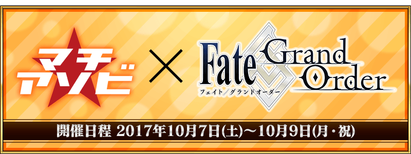

非常感謝您使用「Fate/Grand Order」。
在2017年10月7日(六)～10月9日(一)舉辦マチ★アソビvol.19「Fate/Grand Order」將出展。
※10月8日(日) 11:00追記
◆マチ★アソビ vol.19出展記念贈送聖晶石10個◆
為了記念マチ★アソビ vol.19出展，贈送聖晶石10個。
【對象期間】
2017年10月9日(一) AM3:00～10月12日(四) AM2:59
【贈送對象】
上述期間遊玩「Fate/Grand Order」的玩家
【贈送內容】
・聖晶石10個
【領取條件】
2017年10月9日(一) AM3:00～10月12日(四) AM2:59的期間中，在初次進行登入的時間點，贈送至禮物箱。
※期間內未登入的情況無法領取。
※禮物只限領取1次。
◆劇場版「Fate/stay night[Heaven's Feel]」公開記念宣傳活動舉辦！◆
為了記念自2017年10月14日(六)在全國128家電影院上映的劇場版「Fate/stay night[Heaven's Feel]」的公開，舉辦劇場版「Fate/stay night[Heaven's Feel]」公開記念宣傳活動。
「劇場來場特典」概念禮裝的贈送等，詳情請自此處頁面確認。
◆「Fate/Grand Order 迦勒底放送局 Vol.7」播送決定！◆
決定在niconico生放送「Fate/Grand Order 迦勒底放送局 Vol.7」的播送。
帶來劇場版「Fate/stay night[Heaven's Feel]」公開記念宣傳活動的詳細和「亞種特異點Ⅲ 屍山血河舞台 下總國 英靈劍豪七番勝負」相關的最新情報。
時間:10月14日(六)
事前放送:18:30～
本放送:19:00～
出演:川澄綾子、島﨑信長、高橋李依、其他
◆「亞種特異點Ⅲ 屍山血河舞台 下總國 英靈劍豪七番勝負」的情報一部份公開！◆
預定在10月中旬～下旬發表「亞種特異點Ⅲ 屍山血河舞台 下總國 英靈劍豪七番勝負」的情報一部份公開！
關於詳情請從此處頁面確認！